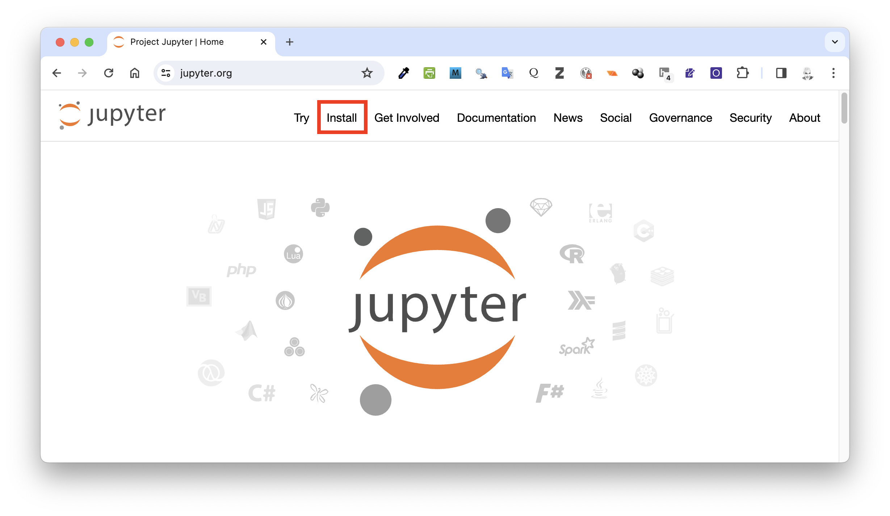
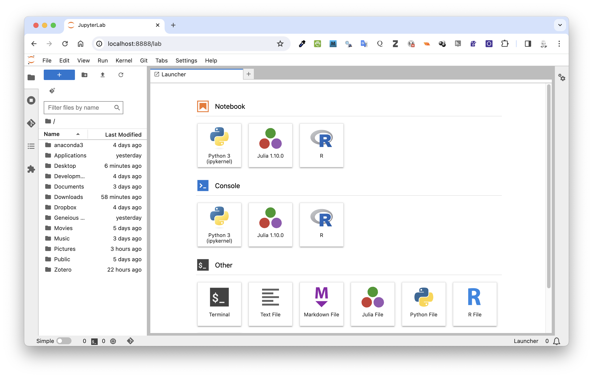
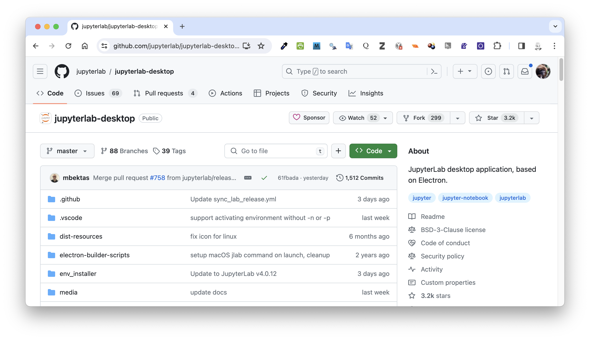
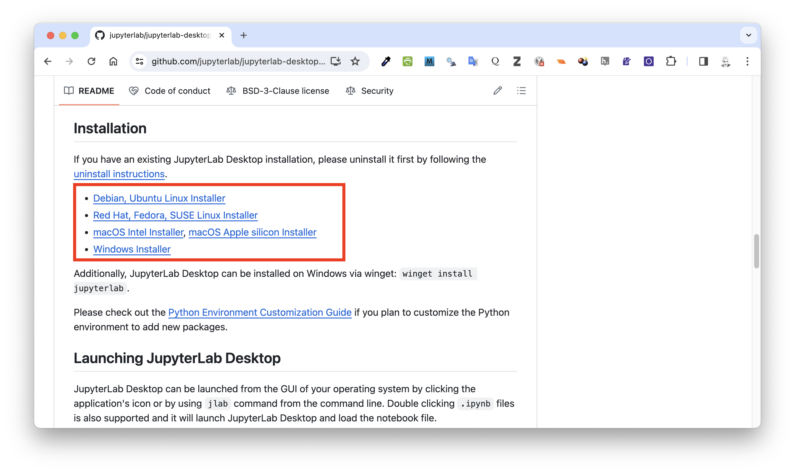
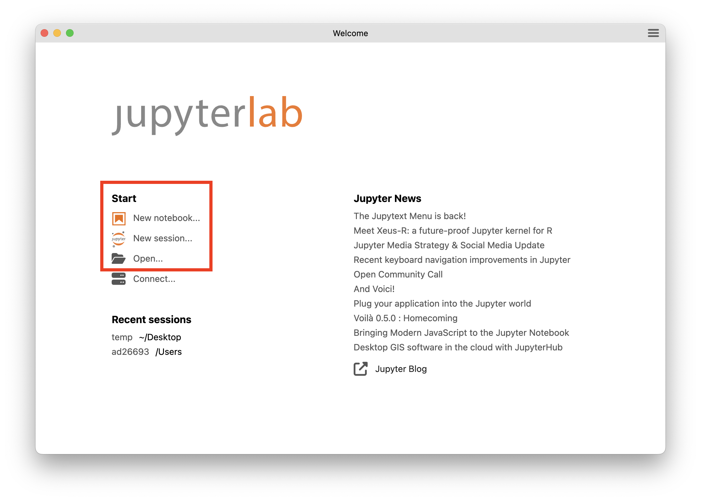
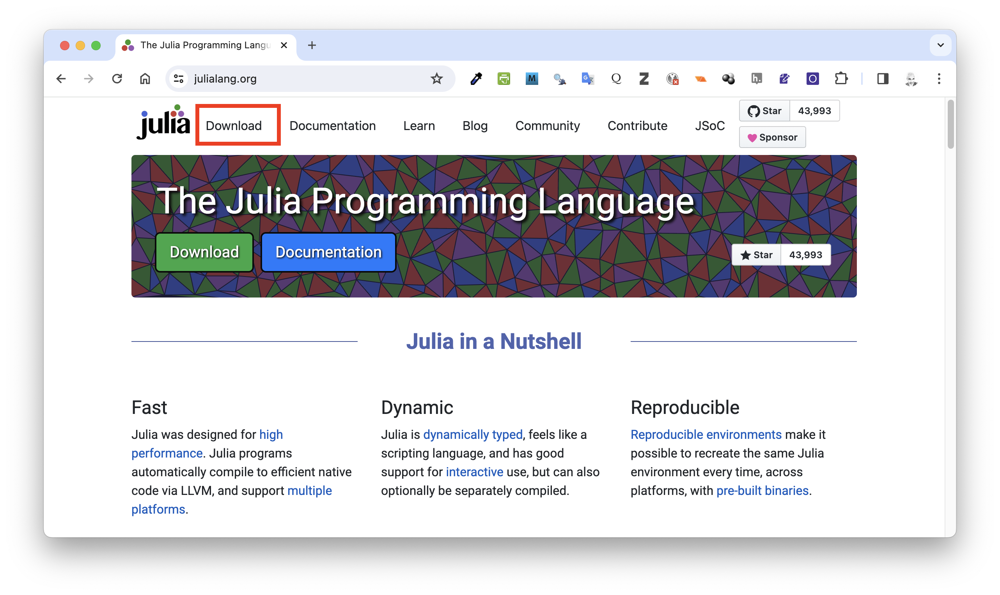
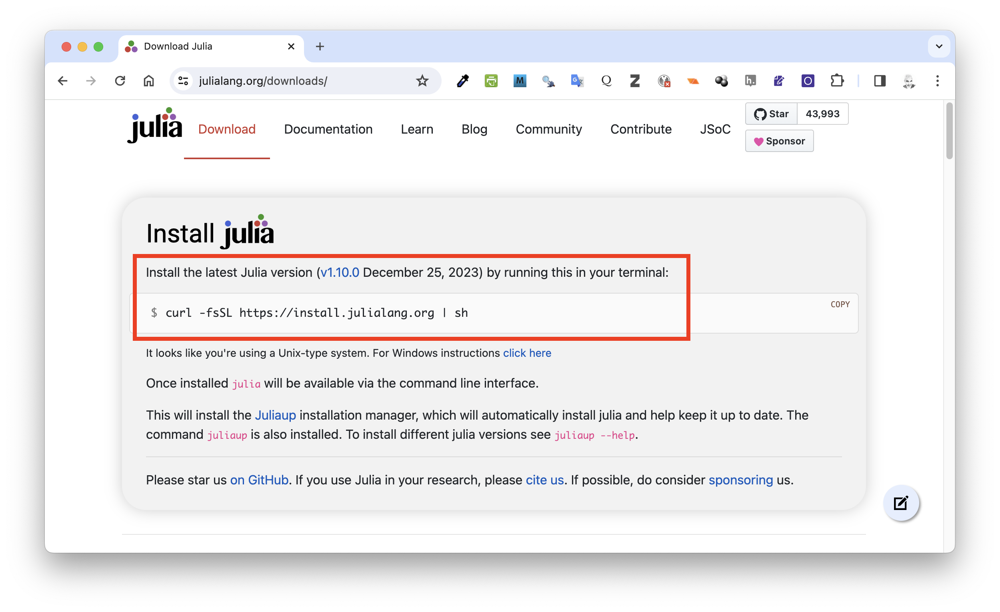
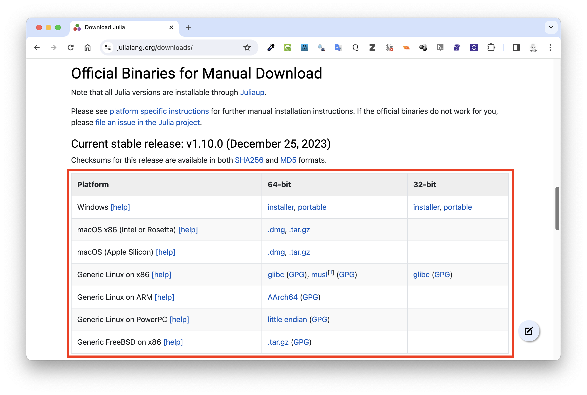
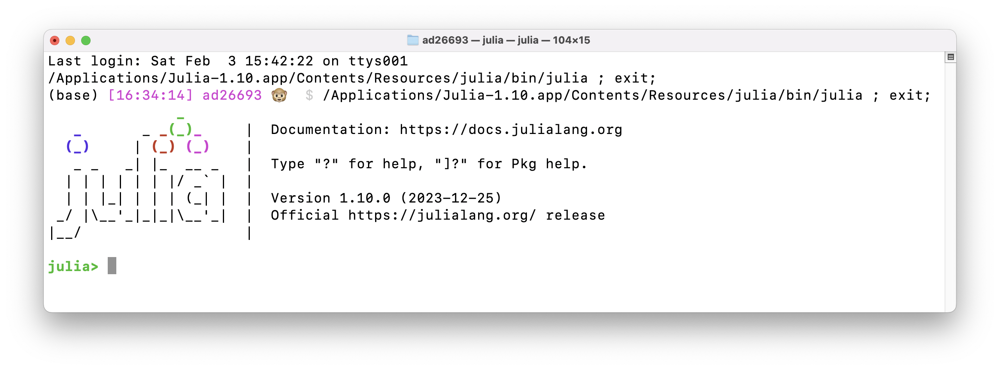

Applied Data Analysis with JupyterLab
Applied Data Analysis with Jupyter and JupyterLab
JupyterLab is an open-source interactive development environment (IDE) for notebooks, code, and data. The IDE can be run either as a web-based application or a desktop application. The original Jupyter project spun off from an earlier “notebook” project for the python computing language called IPython.
Currently, Jupyter and the JupyterLab IDE implementation support execution environments (or “kernels”) in several dozen languages, including python (via the IPython kernel), R, and Julia, among other (e.g., Haskell, Ruby). According to Wikipedia, Jupyter’s name is a reference to the three main programming languages that supported by the IDE, which are Julia, python and R.
Installing JupyterLab
Browser-Based Version
Go to the Project Jupyter homepage, click the “Install” menu, and then follow the instructions for installing JupyterLab (rather than the older Jupyter Notebooks), using either pip, a Python package manager, or homebrew.
- For the former, run
pip install jupyterlabat a terminal prompt - For the latter, run
brew install jupyterlabat a terminal prompt
To start up JuptyerLab, run jupyter lab at a terminal prompt. A browser window will open connecting you to a localhost serving the program, usually on port 8888.

From the “Launcher”, you can start either a new notebook or console session running python, open a new terminal window, or create a new markdown or code file. If you have installed and set them up, you can also start sessions running R or Julia or other software.
Desktop Version
Alternatively, you can install a desktop version of the software, which will enable you to run JupyterLab as a stand-alone version, rather than serving it from a localhost in a browser window. To do so, go to the GitHub page for jupyterlab-desktop…

… scroll down to the installation section, and choose the installer for your operating system.

Once the software is installed, you should be able to double-click on the JupyterLab software icon to launch it. From the opening screen, you can then start a new notebook, a new session, or open a file browser.

Using JupyterLab with python
JupyterLab should be set up upon installation to access a particular default python kernel and environment as it is built on top of the orginal IPython notebook software. Unless you specify that a different execution kernel or python environment should be used, JupyterLab will access this default python kernel and environment (typically, this might be from an Anaconda installation of python).
Using JupyterLab with R
First, make sure you have installed R (and, if you want, RStudio).
Then, to add R to JupyterLab, first open either R or RStudio and install the {IRkernel} package using either the GUI package manager or by typing install.packages('IRkernel') at the R console prompt.
Then run IRkernel::installspec() to register a kernel (exection environment) for the current R installation.
This will install in JupyterLab a kernel with the name “ir” and a display name of “R” in the “Launcher”.
NOTE: It is possible install kernels for multiple versions of R by supplying a
name=anddisplayname=argument to theinstallspec()command, i.e., with these pointing to different R interpreters. Subsequent calls toinstallspec()without changing thename=argument will overwrite the current kernel with a specification pointing to the latest R interpreter that commands were called from. Note that the {IRkernel} package needs to be installed in the package library for each R interpreter that you may want to connect to JupyterLab.
Options for using R should now appear in the “Launcher” when you open JupyterLab.
Using JupyterLab with Julia
First, go to the home page for the Julia programming language and select the “Download” menu…

… and then either install Julia from the command line using curl…

… or download and run the binary version of the installer for your operating system.

In order to add Julia to JupyterLab, run the command julia from a terminal prompt or double-click on the software icon to start the program. Then, at the Julia command prompt…

… enter the following command to access functions from the Julia package management system:
using Pkg
Then, add the {IJulia} package using the command:
Pkg.add("IJulia")
Options for Julia should now appear in the “Launcher” when you open JupyterLab.
Code Completion in JupyterLab
Code completion in JupyterLab is implemented differently than in RStudio. Whereas code completion suggestions appear in RStudio as popup options as you start typing, in JupyterLab you need to press the Tab key for suggestions to appear. As in RStudio, you can then use the arrow keys to select the one you want and hit Enter to accept the selection.
Adding New python Packages in JupyterLab
You can install new python packages from a python code cell or console prompt in JupyterLab into your environment using the commands pip install <packagename> or conda install <packagename>, e.g., pip install plotly. Again, packages installed this way should also still be available if you access the same python environment from RStudio or another IDE.
The commands pip list or conda list can be used to list packages installed in the current environment.
Adding New R Packages in JupyterLab
Running the function install.packages() in an R code cell or at an R console prompt in JupyterLab should, by default, install new packages into the User Library location associated with the particlar R kernel you are running. R packages installed through JupyterLab should be accessible to your R installation from RStudio, and vice-versa.
Adding New Julia Packages in JupyterLab
You can install new Julia packages from a Julia code cell or console prompt in JupyterLab by first running the code using Pkg to be able to access the Julia package manager functions and then running Pkg.add("<packagename>"), e.g., Pkg.add("Plotly").
The command Pkg.status() can be used to list installed Julia packages.
You can install the Quarto JupyterLab extension one of two ways:
In the JupyterLab UI: Search for ‘Quarto’ in the Extension Manager and install the jupyterlab-quarto extension. You’ll be prompted to refresh the page when complete.
Screenshot of the Jupyter Lab Extension Manager with ‘quarto’ typed in the search box, and one Search Result with the name ‘jupyterlab-quarto’.
Platform Commands Mac/Linux
Terminal python3 -m pip install jupyterlab-quarto
Windows Terminal py -m pip install jupyterlab-quarto
The ideal workflow for authoring Quarto notebooks in JupyterLab is to run the quarto preview command from within a terminal:
Terminal quarto preview